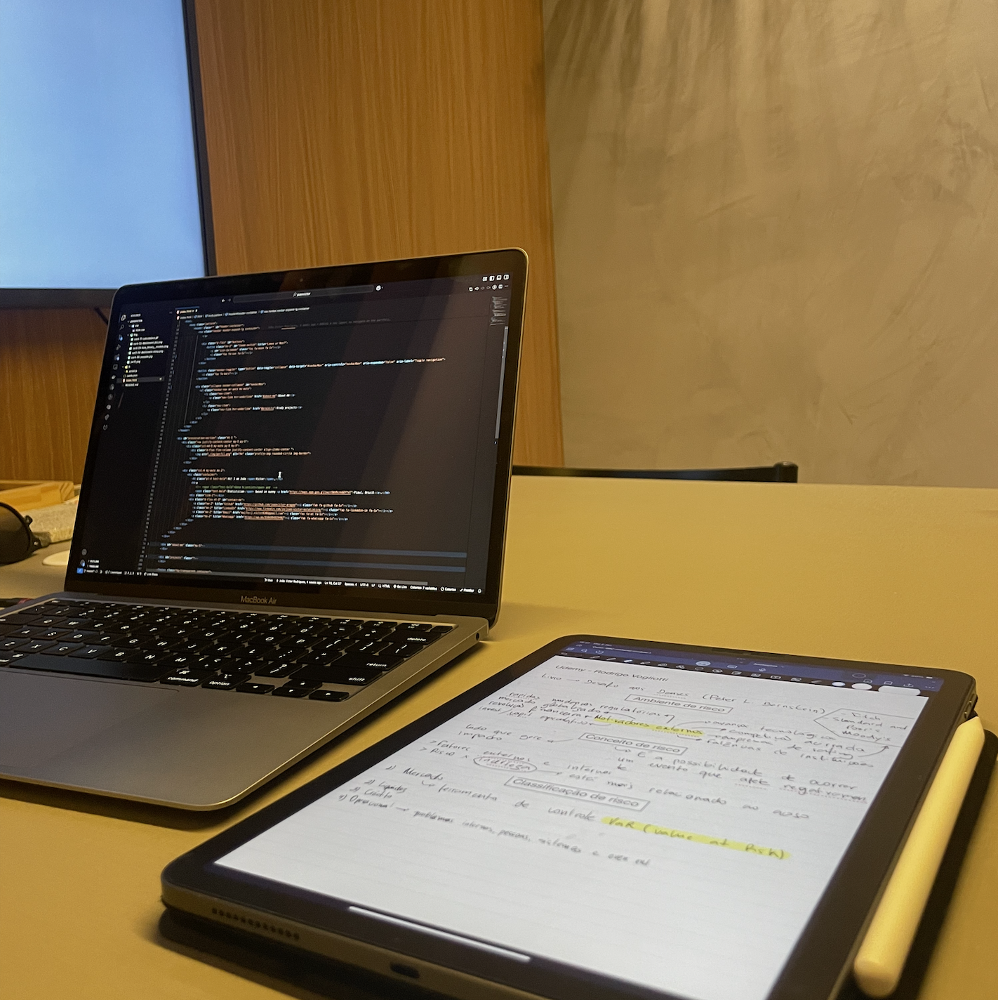

A resume about my abilities and progress in my career.
Statistician graduated from
UFPI, with extensive experience
in creating and implementing analytical solutions for complex business challenges,
ranging from large-scale data storage to statistical modeling, risk analysis, and machine learning.
I have a profile focused on results, with the ability to translate data into insights
through detailed and well-structured reports. My expertise includes mastery of languages
such as R, Python, SQL, and Elasticsearch, combined with the ability to manage internal
and external analyses, ensuring accuracy and efficiency in high-impact projects.

Study projects
Projects and challenges to solidify skills and make everyday
life easier.
Differentiated Thyroid Cancer Recurrence EDA Project
Analyze the Differentiated Thyroid Cancer Recurrence dataset using Exploratory Data Analysis (EDA) and build PREDICT interface models to classify whether cancer.
Retrieve all the tasks associated with the current sprint from
the Jira Atlassian API, ensuring to include relevant details
such as task status, assignee, priority, and estimated
completion time.